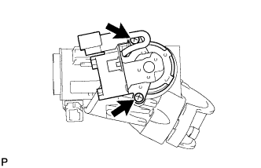

РУЛЕВАЯ КОЛОНКА В СБОРЕ (для моделей с наклонной телескопической рулевой колонкой с ручным приводом) > РАЗБОРКА |
| 1. СНИМИТЕ ПРИВОД БЛОКИРОВКИ РУЛЕВОГО УПРАВЛЕНИЯ В СБОРЕ |
С помощью кернера отметьте центр болта с конической головкой.
Используя дрель со сверлом 3-4 мм (0,118-0,157 дюйма), просверлите отверстие в болте.
С помощью винтового съемника выверните болт и снимите привод блокировки рулевого управления в сборе с рулевой колонки в сборе.
| *A | для моделей без системы посадки и запуска |
| *B | для моделей с системой посадки и запуска |
| 2. СНИМИТЕ ЦИЛИНДР ЗАМКА ЗАЖИГАНИЯ В СБОРЕ (для моделей без системы посадки и запуска) |
Включите зажигание (ACC).
Вставьте конец отвертки в отверстие в верхнем кронштейне рулевой колонки, как показано на рисунке, и вытягивайте замок зажигания до тех пор, пока его захват не коснется стопора верхнего кронштейна рулевой колонки.
| *1 | Захват |
| *2 | Стопор |
| *a | Нажмите |
| *b | Вытяните |
Вставьте конец отвертки в отверстие в кронштейне рулевой колонки и наклоните ее вниз, как показано на рисунке, и освободите захват цилиндра замка зажигания. Затем достаньте цилиндр замка зажигания.
| *1 | Стопор |
| *2 | Захват |
| *a | Наклоните |
| *b | Вытяните |
| *c | Захват отцеплен |
| *d | Отверстие для вставки отвертки |
| 3. СНИМИТЕ ВЫКЛЮЧАТЕЛЬ РАЗБЛОКИРОВКИ КЛЮЧА В СБОРЕ (для моделей без системы посадки и запуска) |
Поднимите центральную часть выключателя разблокировки, чтобы освободить 2 захвата.
| 4. СНИМИТЕ СОЛЕНОИД БЛОКИРОВКИ КЛЮЧА (для моделей без системы посадки и запуска с автоматической трансмиссией) |
Отсоедините разъем.
 |
Выверните 2 винта и снимите соленоид блокировки ключа с верхнего кронштейна рулевой колонки.
| 5. СНИМИТЕ ЗАМОК ЗАЖИГАНИЯ (для моделей без системы посадки и запуска) |
|  |
Выверните 2 винта и снимите замок зажигания с верхнего кронштейна рулевой колонки.
| 6. СНИМИТЕ ЖГУТ ПРОВОДОВ СОЛЕНОИДА БЛОКИРОВКИ КЛЮЧА (для моделей без системы посадки и запуска) |
Отсоедините жгут проводов соленоида блокировки ключа от замка зажигания.